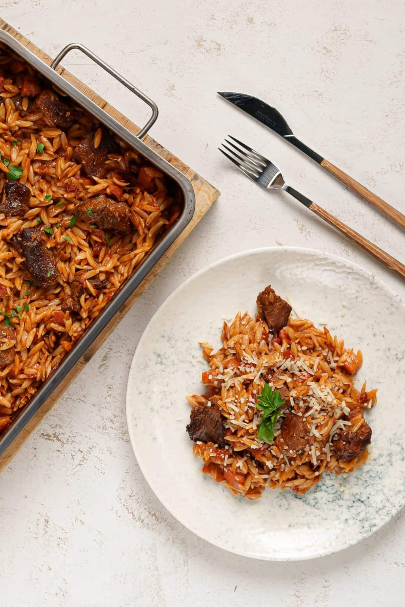

Youvetsi (pronounced YOO-vetzi) is an everyday dish that doesn’t require any fancy ingredients.
Description
Giouvetsi, also sometimes called youvetsi (or even yiouvetsi or yuvetsi, there’s
lots of spellings for it!) is a traditional Greek meat
and pasta casserole that you bake in the oven.
It is traditionally made with veal, lamb or beef and t
he meat is cooked in a tomato broth with pasta.
Ingredients
Traditionally, Orzo pasta is used, the one that looks a lot like rice.
1 kg/ 35 ounces diced veal shoulder or diced beef
2 medium red onions, finely chopped
2 medium red onions, finely chopped
2 carrots, sliced (1 cm thick)
1 tin of chopped tomatoes (400g / 14 oz.)
2 tbsps tomato paste
1 tsp sugar
1 glass of red wine
1 cinnamon stick
1/2 cup of olive oil
500g (2.5 cups) orzo pasta (kritharaki / manestra)
100g grated kefalotyri or feta cheese (5 ounces)
Steps
Pat dry your Giouvetsi meat with paper towels.
Heat 1/2 of a cup of olive oil into a pan, add the chopped onions and carrots and sauté for 5 minutes in medium-low heat. Turn up the heat and add the veal; brown the meat on all sides until crusty.
Stir in the tomato paste, sauté for a minute then pour in the red wine. Wait for the wine to evaporate. Add the tinned tomatoes, the sugar, the cinnamon stick and a good pinch of salt and pepper and enough water to cover the meat.
Turn the heat down and simmer with the lid on for about 45 minutes or until the beef is tender and fully cooked. Occasionally stir and top up with water if the sauce starts to dry out.
In the meantime, heat another pan, add 3 tbsps of olive oil and the orzo pasta and sauté, until golden.
Once your meat is done simmering, place the orzo pasta in an oven tray along with the meat and sauce (remove the cinnamon stick) and mix.
If needed, add enough water so that the pasta is just covered. As a rule of thumb you’ll need about 3 cups of liquid for 1 cup of orzo pasta.
Cover the tray with some aluminum foil and bake in preheated oven at 180C for 30 minutes. Remove the aluminum foil, add a splash of water if it has dried out, and put back in the oven for another 15 minutes.
To serve, sprinkle with some grated kefalotyri or any hard yellow cheese and enjoy!